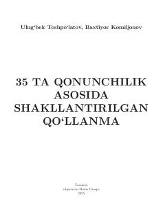

3TO'zbekiston Respublikasining 35 ta muhim qonunchilik hujjati asosida tayyorlangan huquqiy qo'llanma.
Ushbu qo'llanma O'zbekiston Respublikasining 35 ta qonunchilik hujjati, jumladan prokuratura to'g'risidagi qonun va boshqa huquqiy asoslar asosida tuzilgan. Kitobda prokuratura organlarining vazifalari, faoliyatining asosiy yo'nalishlari va prinsiplari batafsil yoritib berilgan.